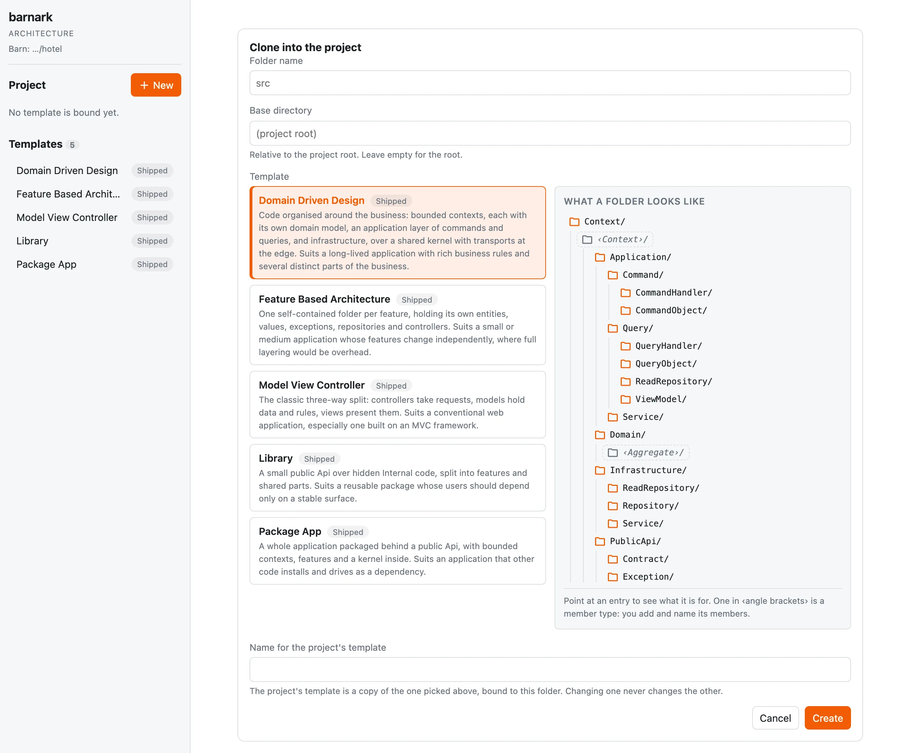
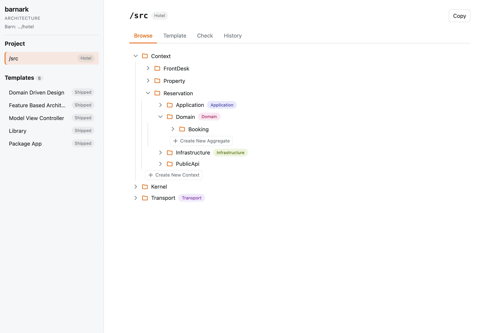
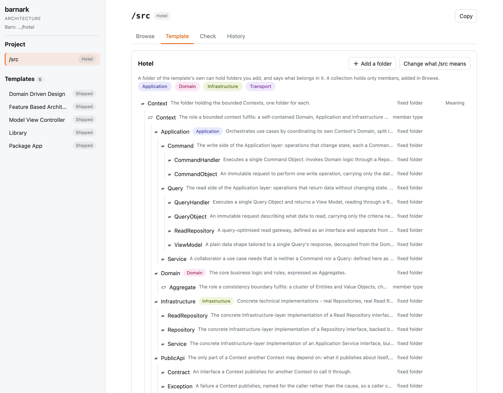
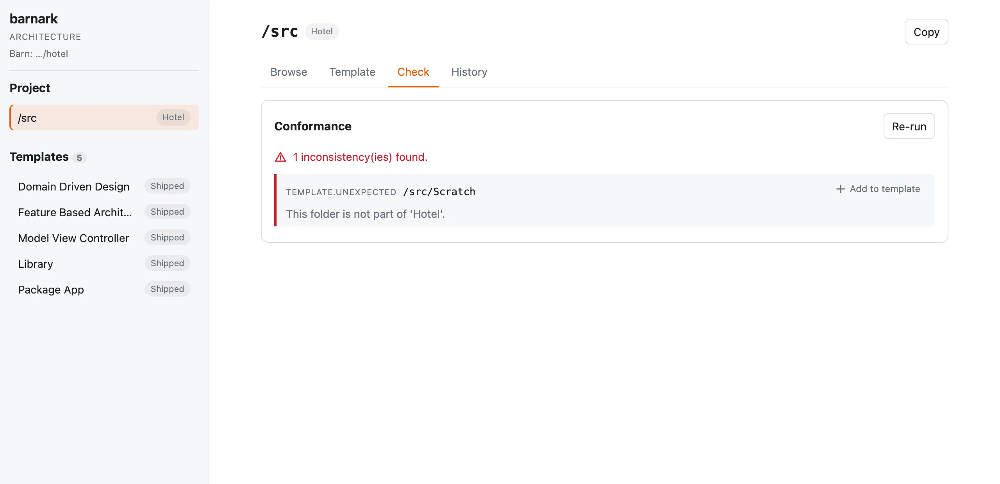

The browser app
Everything Barnark does, in a browser.
The browser app does everything the command line does: clone a template into the project and make its folder, browse the folder’s tree, add what the template offers, run the check and keep templates of your own. It is the easiest way to use Barnark.
Start it #
$ vendor/bin/barnark gui # http://localhost:8081, opens your browser
$ vendor/bin/barnark gui --port=9000 --no-openIt serves the barn it is started in: the nearest folder at or above the current one that holds a .barn/
folder. It prints the barn’s root and picks the next free port if the port you asked for is taken. Stop it with Ctrl-C. With no barn
there, the page says so and offers to make one in the folder it was started in. That adds only the .barn/ folder.
| Option | What it does |
|---|---|
-p, --port=PORT | The port to try first. The default is 8081. |
--host=HOST | The host to listen on. The default is localhost. |
--no-open | Don’t open a browser window. |
--dry-run | Print what would be started without starting it. |
The side panel #
The side panel has two headings. Project holds the project’s one bound folder and its template. Templates holds your own templates first, then the shipped ones, marked Shipped, which are read-only. Click a shipped template to see its tree, or one of your own to see its History. The panel can be dragged to whatever width you like, and a double-click on the divider puts it back.
Clone into the project #
With nothing bound, New beside Project opens Clone into the project. You name the folder and its base directory, pick a template, and name the project’s template, which is a copy of the one you picked. Beside the choice is the shape a folder following it takes: the folders every clone has, ‹named›/ placeholders for the member types you add to yourself, and the members a template of your own already has. Point at any part to see what it is for. A project has one template, so once it has one, cloning is turned off.

Browse #
The tree shows a folder’s folders, never its files. Wherever the template has a member type for a folder you name, it offers a button for it, on the directory’s own row and inside the directory once it is open. Click, for example, Create New Context, give the new folder a name, and the template’s whole structure for it is made underneath.
A member is part of the template, so adding or deleting one makes a new revision, with a reason Barnark writes, such as “Added Context/Billing.” The delete dialog says so before a member goes.

Template #
The Template tab shows the bound template’s current tree with what each folder means. A folder of the template’s own offers +, to add a folder of yours inside it with a name and a meaning, and Meaning, to change what it means. Add a folder and Change what /src means do the same for the bound folder itself. Each is a new revision. A collection holds only members, so it offers no +, and nothing inside a member offers anything.

Check #
The Check tab runs the check. An unexpected folder offers Add to template: give it a meaning and it becomes part of the template as it is, and the check runs again.

History #
The History tab lists the template’s revisions and shows each as a read-only tree. Revisions and history has the rest.
Tags #
A template can tag its folders, as Domain Driven Design tags its layers Application, Domain,
Infrastructure and Transport. A folder’s tags show as coloured labels beside its name, in Browse and in a
template’s tree, and pointing at one shows what the tag means. Above a template’s current tree, a bar holds each of its tags: choose one to
see only the folders with that tag and the folders above them, every context’s Application among them, and choose it again to
see the whole tree.